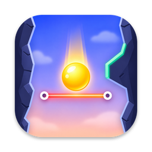

Datenschutzerklärung
für die App „GumBall“ · Stand: September 2026
Verantwortlich
Christian Voigt
Am Falkenberg 103
12524 Berlin
Deutschland
E-Mail: GumBall_App@icloud.com
Kurz gesagt
GumBall erhebt keine personenbezogenen Daten. Es gibt kein Benutzerkonto, keine Werbung, kein Tracking und keine Analyse-Werkzeuge. Die App sendet keine Daten an eigene Server.
Daten auf deinem Gerät
Dein Rekord, gekaufte Bonus-Vorräte und der gewählte Ball-Skin werden ausschließlich lokal auf deinem Gerät gespeichert. Sie werden gelöscht, wenn du die App entfernst.
In-App-Käufe
Käufe werden vollständig von Apple über den App Store abgewickelt. Zahlungsdaten erhalten wir nicht. Es gilt die Datenschutzrichtlinie von Apple: apple.com/de/legal/privacy.
Game Center
Wenn du bei Apple Game Center angemeldet bist, wird deine erreichte Höhe an die Game-Center-Rangliste übertragen und dort zusammen mit deinem Game-Center-Spielernamen angezeigt. Dieser Dienst wird von Apple betrieben; es gilt die Datenschutzrichtlinie von Apple. Du kannst Game Center jederzeit in den iPhone-Einstellungen abmelden.
Deine Rechte
Da wir keine personenbezogenen Daten speichern, können wir hierzu keine Auskunft geben. Bei Fragen zum Datenschutz schreib an die oben genannte E-Mail-Adresse.